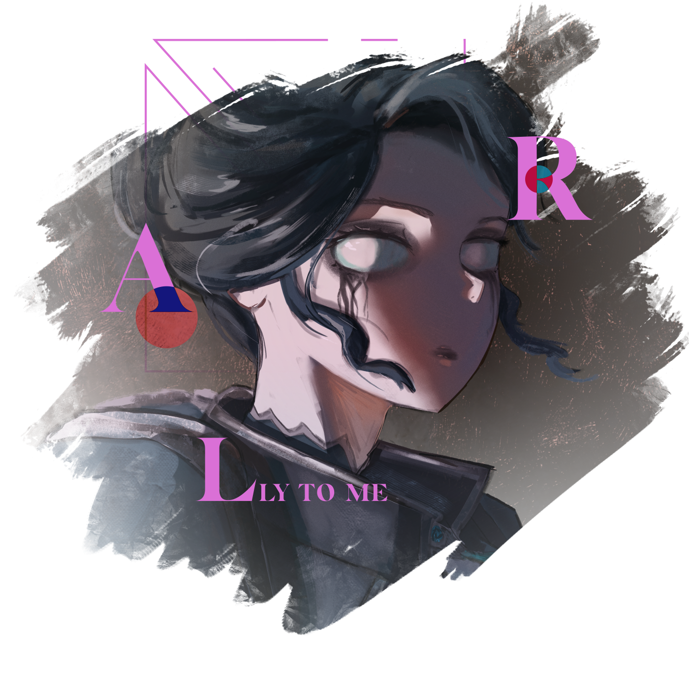

How to Play Brigitte
Brigitte is a very powerful Support in the right hands. While her kit may seem situational, intelligent practice can make her an "evergreen" hero pick capable of playing both with and against any team composition you'll find on the ranked ladder.
I have one-tricked Brig from Silver 4 to Grandmaster after picking her up for the first time in Season 2 of Overwatch 2. If I can climb, so can you.
Achieving a high rank in Overwatch does not require precise mechanical skill, nor does it require good comms between yourself and your team. I've never been one for aim trainers and I didn't begin using comms until well after reaching Grandmaster. While mechanics and comms are helpful, the most important skill to train in Overwatch is understanding the game state and how to manipulate it in your favor.

1. The Fundamentals
Controlling Space, Not Feeding, Using Rally, & Protecting Your Other Support
2. Advanced Tech
Mind Games, Counterbashing, & Shield Bash Jumps
3. Counterplay
How to Counter Every Hero in the Game
4. General Advice for Lower Ranked Players
Tips Specifically for Those Trying to Climb Out of the Metal Ranks
The Fundamentals
Brig is a hero centered around balance. There are times when Brig's best play is to engage on enemies close-range, swinging and bashing as aggressively as possible. There are times when Brig's best play is to stay far away from the enemy team and poke them with her Whipshot when possible. Neither course of action should be your sole playstyle for the duration of any given game, rather you should observe the state of the game and determine which is the greater benefit for your team in the given moment. A Brig who only plays close-range, swinging on any enemy they can find, will inevitably put themselves in a bad position, feed, and die. A Brig who only plays with long-range Whipshots might as well play another Support.
Brig's greatest asset as a Support is her ability to control and defend space on the map. Yes, the AOE healing from Inspire is great. Yes, the burst healing from her Repair Packs is great. Yes, Rally is a versatile and powerful Ultimate. None of these individual abilities are what make Brig so strong in virtually any team, they are all in service to her ability to control and defend space. So, what does this mean?
Controlling Space
Setting Up
Once you are in a strong position, you want to remain in/around that position for as long as you can without dying or until the game state has changed such that your position is no longer as strong as it was. As an example, on an Escort map such as Dorado, playing on the high ground highlighted in green is where you will often want to start when playing Defense. However, even if the enemy team is playing dive and you are repeatedly successful in keeping them off of this space, the nature of Escort means that the payload's progress will alter the game state even if it is far away from reaching the next checkpoint. On Dorado, the payload will eventually reach the choke of the archway, at which point you will often want to give up your position outlined in green to move closer to the area highlighted in blue. Through no fault of your own, the green space is now inherently less advantageous to control than the blue space and you must adapt accordingly. Furthermore, just because the green space has grown weaker, that does not mean that it won't return to being the stronger position later on in the match. If you move to the blue position and your team subsequently wins the fight and holds the choke, then you will likely want to set up for the next fight by returning to the green position. This concept of moving between areas of the map based on their immediate advantages and disadvantages is called rotation and is a key part of playing Overwatch as a whole. As Brig, you will want to identify areas that give you strong line-of-sight to where you anticipate the next fight will occur, and/or areas that would be advantageous for the enemy team to control, and rotate to and from those areas accordingly.
Dropping From High Ground
Outside of certain techs that let her abuse map geometry with Shield Bash, Brig has no vertical mobility whatsoever. When electing to drop from high ground to swing on the enemy team, keep in mind how difficult it will be for you to return to that high ground. Some high grounds, such as the tall buildings on the second point of Hollywood, are easy for Brig to access due to the elevators. Other high grounds, like the buildings overlooking the first point of King's Row, will take significantly longer for Brig to get to and may also put Brig in view of the enemy team, allowing them to kill you while rotating. If you are not confident that you can return to the high ground before the start of the next team fight, then reconsider dropping down.
Controlling Doorways
Positioning
Downtime
Don't be afraid of downtime. There will be moments during your matches when you are functionally doing nothing other than standing around. An impatient Brig player who uses this time to get more involved in a fight will die more often and die early, potentially losing your team a round or even the game. Sometimes, standing menacingly is the most valuable thing a Brig can do.
In the below example on Watchpoint: Gibraltar, you can see that I am essentially standing still in spawn for a solid 20 seconds at the start of the game . Since my team is taking opening spam damage, my job is just to sit back and toss packs until my Tank and DPS manage to get through to set up their own engagements.
Understanding the Game State
For an example on how the game state informs your position, let's look at this example on Rialto. The reason I'm in the position I am in at the start of the clip is because I successfully tricked the enemy team into believing I had swapped spawn rooms after our team lost first point. I move to reconvene with my team and, even though I know where the enemy Mauga is and what he is doing, I don't back up into my team, nor do I so much as glance at my team to heal them or try to help them deal with the Mauga in any way. This is because the value of what the Mauga is doing comes in helping his team get point progress. This is a form of taking space inherent to the role of the Tank. At one point in this clip, all four of my teammates are looking at Mauga, which means none of them are looking at the payload. As soon as I realize that the enemy Ana is sitting alone on point, I decide that my best play is to contest the Ana and defend the space that she is looking to take. It doesn't even matter that I whiff every Whipshot in the clip; the simple act of my being there is enough to completely deny both the Mauga and the Ana from getting any value.
Don't Be Late to the Fight
A mistake I frequently see when watching Brig gameplay is being positioned just too far away from the fight.
Get Off the Corner
This is a concept taken from Capitology, a former coach for professional Overwatch. You can hear him discuss this topic himself in this YouTube video, but here I'll be summarizing this concept and expounding on it through the lens of Brig. When staging yourself in advance of the next team fight, you want to be positioned such that the enemy team, the Tank in particular, cannot reach you without needing to expend such significant resources that killing you equates to suicide.
This is primarily something that needs to be learned by Brig players in Diamond rank who are having trouble making it to and staying in Masters. Brigs in the lower metal ranks tend to play very close to the fight at all times, and in the climb to Platinum and Diamond they learn to keep their distance and play their life. The gap in climbing past these ranks comes in unlearning that distant playstyle, at least to a certain extent. The ebb and flow of the game state is what allows Brig to move between your team's frontline and backline or even onto cheeky off-angles while managing to get value at every stage.
Not Tilting
Everyone in Overwatch gets tilted at some point. Maybe the enemy Hanzo just keeps hitting bullshit headshots, maybe your team is filing into the enemy's bullets conga line style and never regrouping, maybe there's another Pharmercy that your DPS cant seem to shoot. While it is normal to get tilted by these frustrating situations, the worst thing you can do as Brig is to get tilted into focusing a single enemy or believing you must solo carry the team to victory. If you get tilted by an enemy Hanzo, do not get tunnel vision and start running at the Hanzo in a blind rage as soon as you see him because no one on your team seems to be able to kill him. You will play worse, you will put yourself in a bad position, you will die, you will lose, and you will get even more tilted. By playing intelligently, you can turn around losing games. By letting the frustration dictate your playstyle, you will go on loss streaks.
I have a personal rule to log off for the day if I lose three games in a row, but you can come up with your own means of dealing with the urge to tilt-queue. Also, we all know that Overwatch comms can be toxic and that can be detrimental to the learning experience. Disabling these altogether can be good if you are the type of person who is easily upset.
- For voice chat, you can disable auto-joining your teams voice channel in Options→Sound→Voice Chat→Team Voice Chat: Off.
- For text chat, you can quickly hide the text chat UI by pressing Ctrl+Shift+C, or you can disable joining text chat altogether in Options→Social→Team Text Chat: Off.
Not Feeding
The advice any Support player will most often hear is to "play their life." Due to how powerful the Support role is, losing a Support early on can snowball into a lost team fight so not dying becomes central to the role's ethos. HOWEVER, the biggest mistake a Brig player can make with this advice is to play too passively. A Brig who focuses on "playing her life" will not seize opportunities to make game-winning plays for fear of dying. This is why I would not recommend prioritizing "playing your life" to aspiring Brig players. This does not mean that you should be cavalier about your deaths and start shield bashing directly into a full HP Reinhardt. This means not taking fights you KNOW you cannot win. When the enemy team sends their tank and two DPS after you, do not stay and fight as we both know you will lose and die. When there is a Ashe in your range who already used her Coach Gun, then go to her and kill her.
Not Being Passive
If you yourself show the confidence to take aggressive space, you will be amazed at how your DPS respond.
Using Your Kit


As I'm sure you are aware, Brig has three primary aspects to her kit:
- Her Shield
- Her Repair Packs
- Her Whipshot
Before we discuss these parts of her kit in-depth, let's address a few things regarding her basic flail swing. First and foremost, you should always be swinging. If you are not playing in Masters+ lobbies then you should either be swinging or holding your shield up for the entire game, even if you are miles away from the enemy team. It's a good habit to get into, even if you don't see its value in every single match. You will occasionally clip enemy heroes who wander into your proximity or even spycheck a Sombra by doing this, which may seem like meager benefits, but the alternative is getting zero benefits at all. There is no reason to not swing your flail all the time, so swing your flail all the time.
Of note, Brig does not have a melee attack like most other heroes, instead her primary fire and her melee are functionally the same button, with both causing her to swing her flail when pressed. Crucially, however, while these inputs both do the same thing, they are still separate inputs. What I'm getting at here is a basic quality of life change I'd recommend you make. Brig's Shield Bash is triggered by pressing primary fire when her shield is up, meaning you are pressing M1 (left mouseclick) while holding M2 (right mouseclick). When you are in the heat of the battle, you will be pressing these two buttons constantly, and I am certain you have, at least a few times, made the mistake of Bashing when you didn't intend to because of this. If you have a mouse with additional buttons near your thumb then I would recommend remapping your controls on Brig so that melee is bound to M1 and primary fire is bound to M4 (M4/M5 are the two keys by the thumb on my mouse, though your mouse may differ slightly). Shield Bash only triggers when using primary fire, not when using melee, so you will never accidentally Bash again since your Bash is now tied to M4 and you can swing your flail as normal using M1 without worry.
While we're on the topic of changing settings, there's a few more I'd recommend adjusting. First off, if you have a computer capable of playing the game at max graphics settings, go to Video→Graphics Quality and change the Lighting Quality from Ultra to High. This will vastly improve the way the models look.
Secondly, if you have a computer and monitor capable of playing the game at 120+FPS, go to Gameplay→General→Miscellaneous→Enable High Precision Mouse Input: On.
Finally, make sure that Video→General→Field of View is set to the max.
Using Whipshot
Whipshot is the simplest part of Brig's kit. It's also one of the strongest tools in the game and among the most satisfying abilities to land. Much as the "boop" is often relegated to mere humor, there's a reason that only a small handful of characters have any kind of real "boop" ability. Being able to completely halt momentum and displace heroes is extremely valuable, even when you aren't knocking people off the map, and this is doubly true when you can boop people from 20 entire meters away.
As I said, the ability is simple. You click the button and the head of Brig's flail will launch forward and hit whatever you are aiming at. That's it. In addition, Whipshot has a very short cooldown of 4 seconds, meaning you can spam this ability pretty freely.
The only nuance to understand about Whipshot is that it is a projectile weapon, not a hitscan one. In the words of Soldier: 76, "aim where they're going, not where they are." Also, don't be afraid to just hit the biggest guy you see ad infinitum. Whipping the Tank is far easier than whipping a DPS or Support, and knocking the Tank away is one of Brig's primary purposes.
There is one significant drawback to Whipshot which you don't anticipate screwing you over until it actually does so. Missing your Whipshot can and will punish you. The farther away your target is, the riskier it is to try and Whipshot them. This is especially true for trying to Whipshot flying characters. Unlike the rest of Brig's abilities, your Whipshot cannot be animation-cancelled via another input. When you click Whipshot, you are locked into an animation until the head of the flail comes back to you, which only happens once the Whipshot has either hit an enemy or an environmental surface. If it hits neither (like in the case of missing a Whipshot on a flyer), then you will be motionless for almost an entire half-second waiting for the Whipshot to reach max range and return, which can be a very long time in the heat of battle. In addition, you are slowed to 50% movement speed when your Whipshot is active, so that's a half-second where you are slow and unable to fight back. Be smart about going for risky Whipshots; if you are eating damage from one angle then it is probably not a good idea to chance a Whipshot on a 20HP Echo in a separate direction unless you are very confident that you can land the hit.
Pre-Aiming Escape Routes
Don't Save Your Enemy
Let's say you've read the tempo of a team fight perfectly, you've found your timing to push with your Tank, and now you are going in for the kills. The last thing you want to do in this scenario is boop your enemy into safety with your Whipshot. The knockback can be pretty severe, and if you are playing alongside Tanks such as Reinhardt, Junker Queen, or Roadhog, then if you use your Whipshot without guaranteeing the elim then you may well boop the enemy out of your Tank's effective range and accidentally save your life. It took me quite a while to learn the discipline to not always go for close-range Whipshots, so don't feel bad if you make this mistake a few times.
Shield Management
Using the Third-Person Camera
Brig is part of a very limited roster of characters who can freely switch to a third-person perspective mid-game. The third-person camera is incredibly important to Brig's kit, as it allows you to scout around corners and see threats you otherwise would not be able to see.
Peeking around corners is especially useful when marking flankers, such as dealing with the Tracer in this clip.
Shield Dancing
In the context of Brig, "shield dancing" refers to repeatedly dropping and redeploying your shield while taking damage either mid-fight or just while rotating. Remember, the shield is flimsy. You can maximize the value you get out of your shield by spreading the damage between both the shield and Brig herself. There is a certain tempo you'll have to learn when doing this mid-fight; Brig's normal flail attack can be animation-cancelled by deploying your shield, so when you alternate swing→shield→swing→shield then you may accidentally cancel one of your swings before it has time to actually connect with the enemy.
Shielding Teammates
Because Brig's shield is so flimsy and her only movement ability is directly tied to it not being broken, you have to be selective about using it to protect teammates. There are two primary scenarios in which I will deliberately stand in front of a teammate with my shield.
The first is when I am on maps with long sightlines such as Havana and am playing alongside characters like Ana, Ashe, or Widowmaker. At the start of the round, you can stand in front of those teammates to allow them to safely get early damage in and prevent them from being killed by a stray Widowmaker shot or Hanzo projectile. Since you yourself are far away from the action at this stage, you can sit in front of your teammate until your shield breaks, duck behind cover as soon as its broken, and then come back out to shield again once your shield has regenerated. You can loop this one or two times before you'll have to actually start playing the game properly. Try not to move too much while you are doing this, since your character model will obscure your teammate's view and they will move on their own to accommodate you standing in front of them.
The other scenario in which you should shield off your teammate is when the enemy Ana manages to land a Sleep Dart on one of your squishier teammates. Whenever this happens, if I am close enough then I will Bash on over and sit over their body with my shield up to prevent incoming damage or, more importantly, to block a follow-up Anti-Nade.
Any other applications of this technique you'll have to just play by ear. For example, though I would rarely consider shielding my Tank considering their large HP pools and defensive capabilities, there are times when your Tank will attempt to rotate out of heavy fire and just barely mistime their movement. In these scenarios, your shield could be the difference between them dying or making it to cover alive. You can also use shield to protect allies using stationary abilities, such as Mercy's Resurrection or Cassidy's Deadeye. Again, play it by ear.
One more niche example, in this fight my Genji popped his Blade and the enemy Cassidy countered with Deadeye to zone him out of using it. You can see that Genji actually used my shield to safely peek from cover to see if there were any safe angles to take here, and we both just backed up upon realizing there weren't any.
Shield Bashing
Whenever you are in a close-range fight with another hero, try to get into the habit of backing up slightly as soon as you Bash into the enemy. This is called "spacing" and is meant to take advantage of the fact that Brig's flail swing has a longer range than the standard Quick Melee of any other hero (Flail has a range of 6 meters while Quick Melee has a range of 2.5 meters). Bashing into an enemy obviously puts you as close to them as possible, but if you back up ever so slightly after the Bash then you will be out of melee range while they are still in flail range. This is especially valuable against heroes like Sigma who rely on the Quick Melee as part of their normal damage combos.
As of Season 1 of 2026, Brigitte is part of the "Survivor" sub-role, which grants the passive to immediately activate health regeneration when using a movement ability.
How Inspire Works
I've saved discussing Inspire for the end of this kit breakdown (excepting the Rally section below) because this ability is needlessly overcomplicated by the Overwatch community, especially casual players. The beauty of Inspire is that you don't need to think about it virtually ever. Every single thing you do that inflicts any damage whatsoever (i.e. swinging the flail, landing a Whipshot, and hitting enemies with Bash) will proc inspire. If you are playing with the rest of Brig's kit to any degree of proficiency then the Inspire healing will come naturally. In fact, prioritizing Inspire is one of the most common ways for amateur Brig players to get themselves killed; they get antsy about not having Inspire up for a while and then they go into a bad position trying to hit a Whipshot and then they die. For the sake of knowledge and completeness, I will explain exactly how Inspire works below, but I truly encourage you to stop caring about this passive ability; it is powerful, yes, but it is only powerful when you are doing everything else right. It is called a passive for a reason. Treat it as such.
Many people liken Inspire to Lúcio's own passive healing since they are both AOEs, however using Lúcio as a starting point is the crux of players' misunderstanding of how Inspire works because the AOE is the only commonality between the two passives and they are otherwise radically different.
When Brig has her Inspire active, she does not passively generate a circle of healing. In fact, it's somewhat erroneous to say she has Inspire "active" at any point. Inspire is not something Brig does, it is something that she gives to other heroes. Any time you proc Inspire with any ability, a very faint yellow burst will emit from Brig one single time. If you pay attention you can see this burst but usually it's something your eyes glaze over. This burst instantly travels 20 meters in all directions, and anyone who was in line of sight when the burst was first activated will receive the Inspire buff. The Inspire buff lingers for 4 seconds and heals 15HP a second, totalling to 60HP of healing. Any ally who received the Inspire buff can leave Brig's line of sight at any point during those 4 seconds and will still receive the full 60 healing because Inspire's healing does not come from Brig, it comes from the buff. Conversely, any ally who was not in Brig's line of sight when she first proc'd the burst will not receive any healing, even if they enter Brig's line of sight immediately afterwards, because they did not receive the buff.
If you think you understand this concept now, I've prepared a small quiz below.
Using Rally
Rally is a powerful and versatile Ultimate that:
- Provides Brig with armor
- Provides allies with overhealth
- Restores your shield HP
- Expands your shield size
- Refreshes your Bash cooldown
- Gives your Bash a stun
That's a lot of effects for a single ability, however do not make the mistake of assuming Rally makes you invincible. 100 armor is nice but the enemy team can chew through it instantly if you give them the opportunity. While Rally does refresh your Bash cooldown, you do not always want to immediately bash in when you Rally. In fact the threat of the Bash stun is oftentimes the valuable part of the ultimate. For instance, one of the most common Ultimate interactions you'll have is using Rally to stun Reaper out of his Death Blossom. Good Reapers are well aware of the fact that you can and will stun them out of their Ult, so you can get a lot of value by using Rally and not bashing as your Rally provides your team with a guaranteed 10 second window where the enemy Reaper cannot use his Ult or else risk the easy stun. 10 seconds is a very long time in Overwatch, so by reading the fight correctly and understanding when an enemy Reaper will want to Ult, you can completely ruin his window of opportunity, and that can be enough to win a whole game.
However, there are many, many great uses of this Ultimate that can turn the tides of a fight.
Shielding Off Enemy Support
One undervalued use for Rally is taking advantage of the expanded shield size to interrupt the enemy DPS's follow-up damage and the enemy Support's healing. The majority of forms of healing in this game cannot pass through shields; if an enemy Kiriko is trying to heal her Tank but you are standing in the way then her healing will be destroyed on impact with your shield. So if, for example, an enemy Winston jumps past a choke to capitalize on an engage opportunity, instead of peeling for the dive you can alternatively stand in the choke with Rally, preventing the Winston from being healed and blocking any burst of follow-up damage from his team. This is very dependent on the enemy team's composition; this would be a bad strategy against a Genji/Tracer/Lúcio/Kiriko team but would be a great strategy against an Ashe/Hanzo/Ana/Baptiste team. You also have to be especially mindful of shield-shredding enemies if you decide to do this (e.g. Bastion or Junkrat, even Lifeweaver to a lesser extent).
This is also a good backup plan in case you mess up your Rally somehow (e.g. you miss a Bash Stun or you're just too far away to get physically violent with anyone before Rally expires). In these scenarios you can just look to block off heals or damage to the best of your ability to get some value out of the Ultimate.
Shutting Down Ultimates
Rally can completely negate a ton of other Ultimates with careful timing. The Ultimates that you can cancel can be broadly grouped into three categories:
To understand why this all works, you must first understand the keywords that Overwatch uses to define how abilities interact with the player character's state machine. All abilities in Overwatch, including Ultimates, are activated in one of three ways: Channelling, Transforming, or Casting.
Channelled abilities are abilities that change the character's default state while active. For example, Brig's Shield ability is a Channelled ability because Brig goes from the default standing state (Fig. 1 below) to the shielding state (Fig. 2) with each state having separate actions available to them. Crucially, channelled abilities can be interrupted by crowd control abilities such as stuns or hacks, which will force the character back into their default state (e.g. if Brig is stunned while she has her shield up, she will forcibly drop shield and return to the neutral, standing state).
Transformation abilities are similar to Channelled abilities, however Transformation abilities only last for a set duration and cannot be interrupted by crowd control abilities. Brig's Rally is a Transformation ability, however if you are having trouble visualizing this concept, an easier example would be Winston's Primal Rage. Both Rally and Primal Rage only last for a set duration and cannot be prematurely ended through being slept, hindered, or otherwise stunned; as long as the ability's duration has not expired, the Transformation will still be active upon recovering from the sleep/hinder/stun/etc.
Casted abilities take place across two stages. The initial stage, the casting stage, begins as soon as the relevant input is pressed. The casting stage lasts until specific conditions are met, after which the casting stage will automatically end, the ability will be activated, and the character will enter a recovery stage for a set duration of time. For example, Lúcio's Sound Barrier is a Casted ability. As you are likely aware, when you use your Ultimate as Lúcio, the overhealth it provides does not apply immediately. Assuming Lúcio is standing on the ground when the player presses their Ultimate input, he will spend ~0.7 seconds casting the Ultimate, after which point the overhealth will be applied to all allies in range and Lúcio will enter a ~0.8 second recovery stage wherein he cannot use his normal abilities before returning to his neutral state. For our purposes, the most important property of Casted abilities is that they can be interrupted during the casting stage but cannot be interrupted afterwards (e.g. if Brig uses her Rally Bash to stun Lúcio while he is casting his Ultimate, the ability is canceled and and the overhealth is never applied. However, if she uses Rally Bash after the overhealth is applied, the stun does not undo the overhealth).
This may seem like an overly technical breakdown, but it's important to understand why things happen (both in Overwatch and in life). Now that we know all of this information, we can return to the three categories of Ultimates that Rally can cancel.
Ultimates you can reliably cancel include any Channelled or Casted Ultimate that Brig is likely to be within Bash range of, such as Reaper's Death Blossom or Moira's Coalescence.
Ultimates you can cancel by predicting are exclusively Casted Ultimates. These Ultimates have very narrow casting stages, so narrow that you likely do not have the reaction speed necessary to Rally and then Bash before the casting stage ends. As such, if you want to cancel these Ultimates, you have to anticipate their use, Rally prematurely, and Bash during the cast time. This is very satisfying to do, but comes with the risk of wasting your Rally if you misjudge the situation.
Ultimates you can theoretically cancel but realistically will rarely be in the right circumstance to include any Channelled or Casted Ultimate that Brig is not likely to be within Bash range of (e.g. Pharah's Barrage, a Channelled Ultimate that is usually activated in the sky, or Junkrat's Rip-Tire, a Casted Ultimate which is usually cast behind cover).
Note that this only applies to interrupting the enemy's Ultimate, not blocking the enemy Ultimate. It is difficult to stun Reinhardt out of his Shatter entirely due to its narrow cast time, however it is very easy to block his Shatter from hitting you or allies behind you due to the effect's reactably slow movement speed. As this does not require Rally to do, these kinds of Ultimate interactions are addressed in the hero-specific Counterplay section below.
A Brief Note on Perks
At the time of writing, Brig's Perks are all quite good. You can't really go wrong picking any of them, though there are definitely arguments to be made for the case of an "optimal build." You should choose your Minor Perk based on the environment of the game you're in; if you are against a more brawl-heavy team and aren't able to get too close to the action then her Right Minor Perk (Morale Boost) can compensate for your limited engagements by extending your Inspire uptime. Conversely, if you are playing against a dive-heavy team and are spending a lot of time fending off flankers then her Left Minor Perk (Combat Medic) lets you chuck Repair Packs with ridiculous frequency.
Her Major Perk is less of a discussion because the majority of Brig players will tell you that her Left Major Perk (Inspiring Strike) is by far the better option. It adds even more utility to Shield Bash, giving you additional movement speed equivalent to Junker Queen's Shout while also making you better in brawls and 1v1 duels by changing the Inspire triggered from Bashing from healing-over-time into burst healing. This means that hitting an enemy with Shield Bash now instantly heals you and any allies in range for 60HP a piece, which is on par with Baptiste's Regenerative Burst. Not only that, this burst healing stacks with your existing Inspire rather than resetting it. If you are in the middle of a brawl, weaving in Bashes and flail swings, then you will constantly be healing for 15HP a second with a 60HP burst heal on a 5 second cooldown. Your healing numbers will skyrocket and flankers will have an extremely hard time killing you or any teammates near you.
However, you will have to pry Whiplash from my cold dead hands.
Whiplash, Brig's Right Major Perk, is so unbelievably fun to use. It's a simple effect: if your Whipshot knocks an enemy into a wall then they will take an additional 50 damage. Before we get into my competitive argument for using it, I could recommend running Whiplash over Inspiring Strike for the dopamine hits alone. Whipping enemies into walls never gets old, and most clipworthy POTGs I've gotten involve this Perk in some capacity. This is not to mention how much Whiplash affects your matchup against Tracer. I go over this in more detail in the Counterplay section later on, but Brig's greatest strength against Tracer is the fact that Whipshot's damage chunks 40% of Tracer's health bar and thus forces her Recall. With Whiplash, a successful Whipshot takes 70% of Tracer's HP, which absolutely cripples her ability to engage if it doesn't outright kill her. To get down to brass tacks, this leads me into the actual reason to run this Perk beyond the fun of doing so.
Whiplash changes breakpoints.
Breakpoints in Overwatch are the thresholds that define how easily one character can kill another. If you've ever wondered why Blizzard's Patch Notes involve tweaking numbers by such small amounts, like how Tracer's damage per bullet has been changed from 5 to 6 to 5.5 and back on multiple occasions, breakpoints are the reason why. For a Brig-specific example, let's look back at Season 7 of Overwatch 2. Included with the October 10 Patch Notes was a small buff to Brig, increasing her Whipshot damage from 70 to 80. At the time, Brig's flail did 35 damage per swing and her Bash did 50. Prior to the Season 7 buff, it took three swings (105) + Bash (50) + Whipshot (70) to kill a 200HP enemy in the 1v1. That's a pretty long time-to-kill. After the buff, it instead took two swings (70) + Bash (50) + Whipshot (80) to reach the same damage threshold, shaving 0.6 seconds off of this combo. All of a sudden, Brig had a much easier time running down DPS heroes like Sojourn, Ashe, and Genji (who were all 200HP heroes at the time) and you could play extremely aggressively because a lot of heroes lost the 1v1 against you. Playing Brig during this period was a ton of fun, all on the back of a tiny 10 damage buff. By the end of Season 7, Blizzard reverted this change and Whipshot remains at 70 damage to this day.
But the key takeaway here isn't just how important breakpoints are to game balance. Something I observed during Season 7 was that players on Sojourn and similar heroes who previously had a favorable matchup against Brig in the 1v1 were staying in those 1v1s for longer than they should have. Players love to mix-max their value, to stay in for as long as they can and do as much as they can before escaping with just enough time and health to live. Identifying just how long you can safely fight before having to disengage is muscle memory for anyone who plays the game beyond the purely casual level. Changing breakpoints ruins that muscle memory. To bring us back to Perks, it actually works in the favor of off-meta gremlins like myself that Inspiring Strike is widely considered the more intrinsically valuable Perk because players at the higher ranks expect me to take it. Much like in Season 7, the enemy Sojourn is far more likely to stay in place for too long when they don't expect a surprise 50 damage that changes Brig's kill combo from two swings (90) + Bash (70) + Whipshot (70) to one swing (45) + Bash (70) + Whipshot (70) + Whiplash (50). The value of disrupting the enemy's muscle memory isn't as obvious as the value provided by Inspiring Strike, however in practice Whiplash has helped me to plenty wins and there are very few games where I don't take it.
This is an uncommon stance, so feel free to take Inspiring Strike if it better suits your playstyle.
Playing With Your Tank
This is an aspect of Overwatch that is overlooked at all ranks but especially at the lower ranks. Your tank sets the tempo of your team's engagements. If you are playing with an extremely aggressive Tank, like a Reinhardt or Doom that just keeps going in, play at their tempo. Play aggressively with them, not necessarily frontlining but definitely not standing on the objective and wondering why your Tank is feeding. And speaking of the objective...
Standing on the Objective
Overwatch is an objective-based game, so players often assume this means that they should be standing on the objective as often as possible. The issue is, everyone assumes this which means players from Bronze to Diamond will stack the whole team on the objective and allow the enemy team to freely take map space. In the case of payload-based map types like Hybrid or Escort, only one person needs to be on the objective to progress your team to a win. In the KotH Control and Flashpoint maps, no one needs to be standing on the objective once your team has control of it. In higher ranks and professional play, this is referred to as the "defender's advantage"; the team in control of the point does not need to be on it, however the team trying to take the point from them does need to be on it, especially as the clock ticks down. This restricts the attacking team's ability to move and allows the defending team to more freely exercise map control.
You'll notice the commonality here is map control. This is why the first section of this guide is about Brig's ability to control space and why I believe Brig is viable just about everywhere. Overwatch is an objective-based game, yes, but winning in Overwatch is based on map control, even if you do not consciously recognize this. The more of the map your team can hold and deny from the enemy team, the higher your team's chances of winning are.
Does this mean you should never stand on the objective? No. As stated, only one person needs to push the objective and sometimes that person is you. On maps with less easily-accessible high ground such as King's Row, I will often be the one emoting on the payload while the rest of my team pushes forward to take space. Conversely, on maps with valuable high ground such as Watchpoint: Gibraltar, I will almost never touch the payload for the entire game. Simply put, it is not my job. At higher ranks people are aware of this, however if you are playing in the metal ranks then your team will likely be a little annoyed that you aren't touching the payload. If they get mad at you, ignore them. I never intentionally try to piss off my team, but it is better to win while your team is a little mad at you than to lose because you acquiesced to their demands that you sit on point. To make things easy for you, these are the maps where I usually elect to be the one pushing the payload:


I will note an exception to this rule, which is when you are in overtime. If you are in comms with your team then you can safely play off the payload if your teammates call out who is on or planning on staying on for the push. It is still better for your team for you to not be on payload, however, if you are solo queueing in silence then I frankly would not risk getting off in overtime. It's far too easy for everyone to assume someone else will push and then you c9 for no reason. Brig is actually a fairly strong payload pusher in overtime anyway; the payload itself heals players around it for 5HP a second, which isn't a lot on its own but during overtime you can consider this to be a small buff to your Inspire. The payload also provides a small amount of cover from incoming fire, so weaving in your shield usage with ducking behind the payload lets you stay alive with an intact shield for quite a while.
One last important note, whenever you are on the payload for any reason, do not actually stand on the payload, stand next to it. You are easier to hit when you are just standing on top of it, you cannot use the payload for cover when you are on top of it, and any Ultimate that affects the floor of the map, like Reinhardt's Shatter or Venture's Tectonic Shock, will go under the payload and ignore your shield when you are on top of it.
Diving the Enemy Backline
When you have Rally (and especially if you have Whiplash) then Brig can reliably win 2v1 fights against most enemy support lines. Depending on the positioning and what the enemy team is playing you can even somewhat reliably get 3 picks when diving the enemy backline as long as you play intelligently. Much as common parlance suggests Brig should not be playing so aggressively, you would be amazed at the amount of bullshit Brig can get away with when she has the sustainability of Rally.
Protecting Your Other Support
An oft-cited part of Brig's hero fantasy is the role of bodyguard. The archetypal anti-dive Support line consisting of Brig & Ana is the most obvious example of this. When faced with a Wrecking Ball, Winston, Tracer, or Genji looking for backline picks, Brig's job is to stay close enough to Ana that the two can work together to repel or even kill these divers. As strong as Brig is in this specific scenario, when you are solo queueing on ladder you will often be alongside players who can't or don't want to play Ana, and you will often play alongside Supports that synergize poorly with Brig. This is completely fine, flaming your other Support for playing whatever hero they decide on will not help you win games (and as an OTP I have no room to complain anyway). Instead, approach these games with a more proactive mindset to identify where you can cover your team's weak spots and where you can embolden your team's strengths. It is entirely possible to win games at any rank even with a Brig/Mercy backline.


Playing with Ana
Games with this backline will likely be among the most fun you will have as a Brig player. If the enemy team is trying to dive then walking alongside your Ana to advantageous high grounds should be your primary objective at the start of any fight. Once you have set up in a strong position, you can control the space in the way outlined at the top of this guide. If the enemy is not trying to dive then you should still walk your Ana towards a strong position, however once she is there you have a lot more freedom to move around. If your Ana is staged on high ground and you can see the enemy team has no heroes with the mobility to jump on her, then you can drop from the high ground and get away with brawling a lot more. Alternatively, your Ana can be the one to drop from high ground to get aggressive with Anti-Nades and Sleep Darts, and you can either go with her or continue standing on high ground distributing packs and whipping away potential threats. There's a lot of versatility in this composition, which is why it is my personal favorite.
Playing with Baptiste
Frankly there's not a lot sexy about a Brig/Bap backline. He has a simple kit that's powerful enough to not need your help, so you'll be playing a pretty default Brig. You work well together, but you don't excel together.
Playing with Illari
You won't see this often for the simple fact that Illari is one of the least-picked Support heroes and players who are good enough at aiming to play Illari effectively are also usually good at Ana and will often just play that with Brig instead. In Grandmaster I honestly think most of the times I get an Illari on my team are when I am playing badly and thus lose my Ana privileges.
If you have the opportunity, make as much use of Illari's Healing Pylon as you can. Playing around the Pylon gives Brig insane survivability, which in turn gives the rest of your team insane survivability. However, oftentimes Illari players will take their Pylons with them to take deep flanks, in which case you should just do the standard Brig strategy of playing around cover in the back of the fight. If you are not near the Pylon then don't try to fight off enemy flankers, just bash away when you see them trying to jump you.
Playing with Jetpack Cat
Playing with Juno
Playing alongside a Juno is similar to playing alongside an Ana. Though Juno has better movement than Ana, she is still susceptible to dives and pairs well with a Brig bodyguard. Unlike with Ana, however, Juno will usually play closer to the main fight, providing speed to your team and finding damage when possible. This offensive pressure, as well as Juno's ability to help disengage with Speed Ring, lets Brig play very aggressively without worrying about dying. However, this also means that you will often be standing in front of your Juno, so remember to turn around somewhat regularly to see if she needs a pack.
Playing with Kiriko
Kiriko is still the most busted support in the game, so even though she doesn't need your help as often as Ana or Juno, she is still pretty useful to have around. Kiriko is an extremely high-value target for the enemy team, and at a certain skill level the enemy team will take notice of when she uses her Suzu or Swift Step and will jump on her as soon as these abilities are on cooldown. Brig can help keep Kiriko alive when she gets jumped like this, however this also requires that you yourself be mindful of when she uses her major abilities. If Kiriko gets jumped while she has these abilities up and you Bash over to help her, then she will immediately teleport away and you will immediately die. Because of this, it is not advised that you play with your Kiriko per se, as she can get far more aggressive than you without dying. Instead, your role is to defend her after she gets aggressive and is forced to teleport back to you and the team.
If your Kiriko is more the healbot type than the flanking/damage-dealing type then you instead play with her similar to how you play with Juno. This kind of Kiriko is probably just standing behind you sending heals down main so intermittently turn around to pack her and otherwise play a slightly more aggressive version of default Brig.
Playing with Lifeweaver
Lifeweaver and Brig have some overlapping qualities as the value of both heroes is their ability to control space on the map, they simply approach this idea in different ways. Lifeweaver has some of the best self-sustain in the game, so he doesn't need a Brig bodyguard. Instead, he actually serves as a valuable assistant to a good Brig, with his Petal Platform offering easy access to high grounds, offsetting one of Brig's major weaknesses, and with his Life Grip able to save Brig from a sticky situation. It is better to play aggressively with this backline, as Brig becomes especially susceptible to coordinated dives since Lifeweaver is capable of keeping himself alive but is less good at keeping you alive. Don't get mad if Lifeweaver doesn't Grip you out of a bad position; that's an ability that is often better used on Tanks since enabling their aggression is more valuable than enabling Brig's.
Playing with Lúcio
Though Lúcio's speed is a valuable asset to play with, Brig/Lúcio tends to be a very weak composition due to the lack of burst healing. When any of your teammates are critical mid-fight, the only forms of healing that are fast enough to save them are Brig's Repair Packs, of which she only has 3, and Lúcio's Amp, which has a long cooldown. A team with this backline will lose any fight that drags on for too long so, while staying alive is important, it is more important to secure kills that can end a team fight. In this backline, it might be worth it to trade your life to guarantee a kill on the enemy team (unless the enemy team has a Mercy that can ruin your sacrifice).
Playing with Mercy
Brig/Mercy is one of the weakest Support lines in the game. A good Mercy will want to prioritize damage boosting teammates rather than healing them, and Brig does not do enough healing on her own to allow Mercy to do this freely. Playing alongside Brig actively gimps a Mercy player from playing optimally. In the same vein, Mercy's high mobility means she does not require Brig's support to stay alive and if you try to play near your Mercy as you would an Ana then a good Mercy will fly away at the first sign of trouble and you will be left alone to die.
In this composition, your most optimal starting playstyle should be more mid-range, poking with your whip and using your bash to move from cover to cover. When you spot an enemy player in a bad position during or after a team fight, jump on them and kill them. When playing a game mode with a moving objective (e.g. Push or the Attack phase of Escort) then it is often Brig's job to stand on point so that Mercy and whoever she is pocketing can move up and take space.
Playing with Mizuki
Playing with Moira
Moira is an independently-functioning Support and will not be spending a lot of time with you in the backline. Moira's ability to sustain herself frees up Brig to brawl alongside the DPS players. Your Whipshot will take on a bit more importance in this composition as the boop it offers is the only form of utility your Support line has.
Playing with Wuyang
The value of playing Brig with Wuyang rests in their complimentary angle control; Brig controls short angles while Wuyang controls long angles. Wuyang outputs very high amount of healing when using his wave, and he can largely handle Tank healing on his own, meaning your Packs can be optimally used on supporting your DPS. Wuyang also outputs a lot of offensive pressure, particularly around chokes, and you can play close to chokes alongside your Tank as long as Wuyang is alive to make walking past the choke a dangerous commitment.
Playing with Zenyatta
Contrary to an initial assumption that the largely immobile Zen would be well-served by a Brig bodyguard, this is actually not in your team's best interest. Zenyatta excels at extremely long sightlines, and a Brig who plays near her Zen will be too far away from any action to reasonably contribute to either healing or damage. In addition, Zen's high damage output and unique melee means that he can deal with most individual divers on his own. Similarly, Zen's low healing output means Brig is best played just within Whipshot range of the enemy team, allowing her to reliably proc Inspire and pack teammates outside of Zen's line of sight. Depending on the map, Brig and Zen are also very capable of stalling objectives on their own by rotating Transcendence and Rally in the event that the rest of your team is dead and the timer is low enough that you can win the round by holding until your team respawns.
While you can get away with more aggressive plays, do not commit to dangerous brawls as you are the more important Support on the team and your death guarantees a lost fight.
Advanced Tech
Mind Games
Knowing how to win mind games with your opponent is a useful skill at all levels of play, and the higher you rise in rank the more valuable this concept becomes. In essence, mind games are when you utilize the threat of your movement or kit to goad an enemy into making a punishable mistake. There are many hero-specific mind games that are addressed in the Counterplay section below, however the basics of a mind game can be applied universally.
For an example on how to mind game your opponent, let's look at the following play on Hollywood from two different perspectives.
After failing to save my Genji, I whip Winston to both proc Inspire and draw attention. Knowing that the Winston will try to jump on an isolated Brig, I immediately bash into the stairway to safety. I know that the Winston knows where I am going and, rather than going across point to the safer location with a mini health pack, I intentionally take a longer route around obstacles behind the point. The foremost reason for this is because it is always better to play around cover, however these particular obstacles provide the secondary effect of obscuring my full character model. When I circle behind the wooden boxes, my character model is completely hidden from Winston's view and he naturally assumes I will continue walking in the same direction towards the safety of the elevator. I wait by the wooden boxes until I hear him jump and then immediately bash back into the stairway I just came from, keeping me safe while leaving the Winston without his Jump in a position that is so bad that he feels forced to use his Bubble in order to keep himself alive. Once my Bash is off of cooldown I again immediately use it, this time to both proc Inspire and to rotate across the point. As a result of setting up and winning this mind game, I am able to keep myself alive and waste enough of the Winston's time and resources that my DPS can clean up his backline and hold point without pressure.
To replicate this kind of play in your own games, you should have a general knowledge of the abilities and goals of the hero you are trying to mind game. The reason the Winston in the above example fell for the mind game was because I presented myself as enticing bait and played as if I was desperately running away from him while actually luring him into a disadvantageous position.
Shield Bash Jumps
Brig's Shield Bash can take advantage of sloped map geometry to launch Brig into the air for flashy rollouts. While Shield Bash jumps range from "extremely situational" to "completely useless," I still recommend learning some just for the fun of doing it. Video guides for jumps on every map in the game can be found on YouTube. The jumps I'd recommend starting with are on the first point of Junkertown and the last point of King's Row. These jumps are easy to master and are easy to get consistent value with.


Counterbashing
One of my favorite techs for Brig is the counterbash. Whenever Brig uses her Shield Bash against enemy abilities that also lock a hero into a single-direction forward movement, both abilities will be canceled and both heroes will be knocked to the ground. This interaction specifically affects:
- Reinhardt's Charge
- Doomfist's Punch
- The initial dash of Vendetta's Whirlwind
- Another Brigitte's Shield Bash
- Ashe's B.O.B. when he is running into position
While this can be an extremely powerful move when executed properly, the fact that counterbashing knocks you down as well as the enemy means that it has be used with thought. If counterbashing knocks you down within full view of the enemy team then they will kill you before you have the chance to get back up and your own team may not be able to kill whatever enemy you knocked down in the process. Try to only use counterbashing when the enemy is engaging close to your team and far away from their own.
Also, it's almost never worth it to try and counterbash B.O.B. since you can displace him with Whipshot or just Bash away from him. The only time I would consider counterbashing B.O.B. is to stop a last-second objective stall. We'll go over this in more detail in the later section on counterplay to Ashe.
Counterplay
A lot of Brig's ability to shut down other heroes, especially those that counter her, will lie in the player's ability to ult track. This does not have to be a perfected skill for the vast majority of Brig players, it is enough to just think generally between fights as to whether an enemy has their Ultimate or not. You will guess wrong sometimes and that's fine. You will guess right sometimes and be rewarded.


D.Va
One of the many advantages of playing Brig is that D.Va is never a problem, even when she is meta and overtuned. Your shield provides just enough defense that she cannot safely shred both it and you just using her Rockets, so D.Vas will rarely commit to running into you unless they are trying to dive your allies in the backline, in which case you can just Whipshot her, hold your shield up to block her Rockets, and then start swinging on her.
Domina
The matchup between Domina and Brig is something of a game of checks and balances. In a sense, Domina is a hard counter to Brig; her primary fire has a longer range than Whipshot, letting her effectively punish Brig from a safe distance. Her Ultimate, Panopticon, turns one of Brig's strengths into a major weakness; Brig's flail swing goes through shields, which is normally a distinct advantage, however this means that Brig is one of the few characters who cannot break the shield Panopticon imprisons her within. Domina's Crystal damages through shields and her combination knockback/stun ability means Domina can even gain the upper hand in close-range duels. Conversely, Brig can also be a hard counter to Domina. As one of the few Tanks with no mobility cooldowns, Domina can't do anything to stop Brig from swinging on her if she doesn't have her Repulsors. Even then, the Repulsors can be blocked with your shield if you manage to predict their use. Furthermore, Panopticon is also blocked by shield, meaning Brig can completely negate Domina's Ultimate without even using Rally.
The Domina matchup is ultimately a test of your ability to gauge the tempo of fights as Brig. Much like Sigma, Brig can somewhat reliably win a 1v1 against Domina but only if you choose the right time to close the distance. Avoid letting her poke you out of valuable positions and be ready to jump on her as soon as the opportunity presents itself.
Doomfist
Doomfist is a fun Tank for Brig to play against as his most powerful tool for setting up kills, his Punch, can be countered by simply bashing into it. Refer to the above section on Counterbashing for best practices on engaging with this. At Diamond rank and above, this interaction will become a mind game as good Dooms are fully aware that you will try to counterbash them and will try to predict your Bash so that they can land their punch either before or after you use it.
Hazard
Not only can you cancel Hazard's Ultimate entirely by stunning him with Rally, you can always block his Ultimate from hitting you specifically by just holding your shield up at a ~45° angle. Once you figure out how to do this, you should literally never be caught by Hazard's Ultimate for the rest of your life.
Junker Queen
Like many tanks, your primary interaction with an enemy Queen should be whipping her away. Whipshot can displace Queen when she is trying to get axe swings in, negating the damage and lifesteal and giving your team an opportunity to follow up. If you are playing on high ground, keep your shield up and be mindful of Queen trying to throw her knife at you to pull you down.
In a neutral state, Rally is a great counter to Queen's Ultimate as the stun will completely negate her movement. However, Queen currently has a minor perk that grants her Ultimate the "Unstoppable" effect, which prevents her from being stunned while using it. Unless you can successfully predict Queen's Ultimate and it is happening early enough that she hasn't selected the relevant perk, then you should not waste Rally trying to stun her and can instead deal with her Ultimate by bashing out of her trajectory and holding your shield up in the direction she will pass. If she does not directly go through you then your shield can block the anti-healing effect from hitting you.
I recommend playing some Junker Queen yourself to familiarize yourself with what an ideal Ultimate scenario looks like for Junker Queen. If you understand what kind of triggers incentivize a Queen to use her Ultimate then you can reliably predict it and position yourself appropriately in advance.
Mauga
Mauga is just a Whipshot battery. If he gets anywhere near you then he can kill you very quickly, so don't take any solo angles or similarly risky positions in his line of sight. Just stay by cover, use Whipshot constantly, and keep your shield intact so that you can Bash away anytime he tries to Stomp you.
The following tech is a bit of a meme but whenever you pull it off it is immensely satisfying. If you think the enemy Mauga has his Ultimate, wait until he charges directly into your team. Much like Reaper, Mauga Ultimates are often telegraphed in this way and if you Rally during his charge, keep your shield up, and bash into him ~0.5 seconds after he stops his charge, then you can stun him out of his Ultimate and he will die. Refer to the above section on using Rally for an explanation as to why this works. Be careful not to let him end his charge on you as the Stomp will knock you down and prevent you from stunning him.
Orisa
If you think the enemy Orisa has her Ultimate, avoid using your Shield Bash unless absolutely necessary. Orisa's ult goes through shields and the fortified state her Ult puts her in prevents you from whipping her away, meaning that your only means of surviving her Ultimate is to bash out of it. When you reach ranks around high Platinum, Orisas will start to reliably use their Ultimate if they see you use Bash.
If your timing is really good then you can get away with using Rally to restore your shield and bash out if she happens to ult when your shield is broken, however if you are not someone with fast reaction speed then it is better to just let her kill you and not waste Rally.
Ramattra
Ram is a pretty hard counter to Brig. His punches in Nemesis Form can go through shields and also pierce, meaning that if you are standing behind your own Tank, his punches can go through your Tank and damage both of you. You can safely Whipshot him as long as you have both Whipshot and Shield Bash off of cooldown. If you get within Whipshot range and don't have Shield Bash then it is possible for the Ram to switch into Nemesis Form, run you down, and quickly kill you, especially if he has speed from Lúcio or Juno. Just keep hitting him to farm Inspire and pack your teammates as necessary; the game of attrition will eventually wear down Ram's resources and it is at that point that you can push him with your team. If you know that his Nemesis Form is on cooldown then you can somewhat safely swing on him normally, however you should only do this if you are confident that you can kill him before his Nemesis Form returns.
Reinhardt
If you think the enemy Rein has his Ultimate, keep your shield up anytime you are within Shatter range. Do NOT try to drop shield to hit a whipshot and proc Inspire, this will fail you frequently and you will be Shattered and you will die. Try to bash away before letting him get close enough to Shatter you. I would also not recommend using Rally to try and stun Rein out of Shatter. While this is theoretically possible, the risk/reward is extremely uneven and your normal Shield is enough to block his Shatter from knocking you down.
While Reinhardt's Charge can be counterbashed, this interaction does not become a mind game at higher ranks like with other interactions. At Diamond rank and above, trying to counterbash a charging Rein is a bad idea in most situations. In fact, good Reins will take advantage of greedy Brigs who are used to mindgaming other counterbash interactions and will attempt to mindgame you by charging at you to bait you into trying to counterbash them and then cancelling their charge before you collide, leaving you in hammer range without your Bash to escape. You shouldn't fall for this more than once per lifetime. At these higher ranks, the counterbash is instead best utilized as a predictive tech to punish Reins in bad positions.
In this example, I am able to predict that the enemy Rein is going to try to pin my Sigma and can counterbash to both save Sigma and guarantee the kill on Rein.
Roadhog
The counterplay to Roadhog is very simple once you get the hang of it. His hook range is equivalent to your Whipshot range, so if you have a good sense of your Whipshot range you can play just outside of his reach. Even if you don't have a sense for this range, you can still safely play within Hook range as long as you play near cover and keep your shield up. As long as your shield is intact then he can't hook you, so be sure to never peek him while your shield is broken. Do not drop shield to use Whipshot and proc Inspire. Brig's shield does not have frame 1 deployment and you dropping shield is a reactable movement that Roadhog can punish with his Hook. Instead, wait until you either see or hear that he has used Hook and then Whipshot him.
The reason you should always play close to the reach of Hook and Whipshot's range is because your best counterplay to Roadhog is to Whipshot him after he hooks other people besides yourself. If you Whipshot him while he is retracting the Hook, the boop will mess up his aim and he will not be able to one-shot your teammates.
Sigma
Sigma is my second-favorite Tank to play against as Brig. As long as you block his Rock, which is incredibly easy to do thanks to its long windup, Sigma is the only Tank that Brig can reliably win a 1v1 against. His shield is useless against your mace and Sigmas have a tendency to panic and use their similarly useless Kinetic Grasp when you swing on them, which essentially loses them the fight against Brig on its own. Simply block his primary fire and keep swinging and he will either die or be forced to retreat. Now this does not mean that you should immediately bash into a Sigma as soon as you see one, because this only applies to a 1v1. If either of his Supports so much as glance at him then you will instead lose, so only take this fight if his Supports are preoccupied, dead, or too far away to heal him. This is a particularly valuable matchup when the enemy Sigma is forced to contest point, especially on KotH maps.
Winston
Nothing makes me smile more than seeing the monkey on the enemy team. Much like Wrecking Ball, Winston is a Tank that Brig directly counters, however the matchup against Winston is much more cerebral than the Ball matchup. Wrecking Ball's extremely high mobility and get-out-of-jail shields let him get away with a lot of mistakes and hyper-aggressive plays, while Winston is a Tank that rewards careful planning, positioning, and execution based largely around two simple abilities. A good Winston can dumpster a team on his own, not to mention how effective he is when coordinating dives with DPS heroes. However, all Winstons hate this one simple trick: Use Whipshot. If Winston can't engage with his Jump then he is basically useless for the next 4 seconds, and as long as you keep hitting Whipshots on him then you can keep him MiA for damn near the entire game.
Wrecking Ball
Wrecking Ball is the most fun Tank for an experienced Brig to play against, however new Brig players will likely have a different experience. Brig is the strongest counter to Wrecking Ball in the entire game, which can put a lot of pressure on newer Brig players who may feel frustrated at their own failure or get flamed by their team if the enemy Wrecking Ball is still able to get away with his plays unimpeded. While you may struggle against Wrecking Ball at first, the more you practice Brig the better you will get at denying him specifically. Try to play in the best sound environment you can (e.g. with headphones, without music playing) as Wrecking Ball's engages can be easily denied without having to look up by just using sound cues. Otherwise, when you see Wrecking Ball lining up above you, put your crosshair directly on him, hold up shield, and then move your camera back down to ground level. This will block his slam every time, preventing you from flying into the sky and getting killed. When you see him coming at your team from any direction other than directly above you, use either Whipshot or Shield Bash against him as both will ruin his momentum and force him to roll away. DO NOT chase him and DO NOT spend your whole game looking backwards and ignoring your own team. As you play you will get a sense of when Wrecking Ball wants to engage and will be able to scout his possible routes of attack without having to take attention away from the main fight.
Zarya
Zarya is very annoying to play against, there's little you can do to her anytime she has Bubbles available. Avoid her to the best of your ability and keep track of when she is using her Bubbles. Whipshot her anytime you see one of her Bubbles expire. If you know that she has used both of her Bubbles then you can somewhat safely get in her face and swing on her, however you should only do this if the rest of your team is still looking at her in some capacity. If she is only shooting you then you will likely die as this is not an advantageous 1v1 for Brig.
Anran
Ashe
Your most important counterplay to Ashe comes in a very specific but not uncommon scenario. This tip applies only when the following conditions are met:- The enemy team is returning to contest the point.
- The game timer is close to 0 (or will hit 0 during the incoming fight)
- You are fairly certain that the enemy Ashe has B.O.B. or is close to B.O.B.
Bastion
Cassidy
Echo
Echo is a flier, so you won't be interacting with her much of the time. Or at least you shouldn't be. If you're practiced with your Whipshot then you can try for some flashy midair hits but be very careful doing this given the potential animation lock if you miss.
While you can't cancel Echo's Ultimate on its own, you can guarantee a kill on Echo if she is in Bash range when her Ultimate expires. This will usually require that you use Rally during Echo's Ultimate, as Duplicate lasts longer than Rally, however if the Echo is panic-Ulting in a bad location then you can prematurely end her Ultimate by killing her Duplicated form. Regardless, as long as you have your Bash off of cooldown, wait until you hear the sound effect of Echo's Ultimate expiring and then immediately Bash into her; any Echo that is close enough to be Bashed will always try to fly away as soon as they can, and a well-timed Bash stun will cancel their Flight cooldown, leaving them stuck on the ground for the easy kill.
Emre
If you believe that Emre has his Ultimate, prioritize standing near enclosed spaces so that you can duck inside. Any area that obstructs line of sight from the skybox makes it harder for Emre to find value with his Ultimate, as he will have to spend time chasing you down if he wants to kill you.
Freja
Genji
The most important thing to do as Brig when fighting Genji is to keep track of his position. Since both Genji and Brig are close-range characters, a Genji that tries to 1v1 you will spend a lot of his time jumping into the air right above your head, and if you lose track of him when he is doing this then he will win the duel every time. Simply keep swinging on him and be prepared to look upwards as you do so and you can win these fights consistently. Save your Bash for when he starts Deflecting, as Bash is your only attack that can damage him through Deflect.
A common Ultimate combo that you will see is the Ana/Genji Nanoblade. When going against a team with both of these heroes, you should save your Rally for the Nanoblade as the stun can prevent the combo from securing elims. You will still sometimes lose to this combo, and that is fine. The enemy team using 2 Ults compared to you just using Rally is a perfectly valid trade.
If the enemy Genji does not have an Ana, then his Blade can still be very powerful but it is a lot easier to deal with. While it is still advisable to save Rally for his Blade, if you are Genji's target then it is possible for you to shut down his Ultimate without Rally by whipping him away from you and bashing to safety. If you play this correctly then he will not be able to close the distance before his Ultimate expires, however at Diamond rank and above this becomes a mind game as good Genjis will try to predict your Whipshot and block it with Deflect, or will save their first Dash until after you try to Whipshot them.
Hanzo
Junkrat
Avoid Junkrat if you see him, especially if he is in an enclosed space. You will not win a 1v1 against a Junkrat as Brig, and dealing with him is not your job to begin with. If he uses his Ultimate, try to position yourself in a corner so that you can attempt to block his Tire with your shield. Unfortunately, if the Junkrat really wants to kill you with his Tire then he will probably succeed in doing so. Do not try to Rally, you will still die.
Mei
If you think the enemy Mei has her Ultimate, wait until she is pressured by your team into using her Ice Block. Mei players will often use Ice Block in seemingly bad positions to bait the enemy team into surrounding them, after which point they will drop Blizzard and freeze you. If you Rally during her Ice Block and bash her almost immediately after she leaves Ice Block then you can stun her out of her Ultimate and she will die.
Reaper
Sojourn
If Sojourn is being pocketed by a Mercy, is being Nano-boosted, or is using her Ultimate, then you should try to avoid her line of sight entirely. At lower ranks you can get away with running into her face and trying to block her shots with your shield or simply swinging on her while strafing/ducking. However, getting into this habit will punish you at higher ranks as good Sojourns will reliably one-shot you even through your shield.
Soldier: 76
Sombra
While I am aware that many in the metal ranks struggle against Sombra, as Brig you shouldn't be too scared of her. If you are constantly swinging as you should be, then you can control a lot of tighter hallways that Sombra might want or need for engagements and disengagements. Furthermore, Sombra's hack is reactable; as soon as you see/hear Sombra starting to hack you, hold up your shield and turn to face her. Since your shield breaks the line-of-sight, it interrupts Sombra's hack. Once you do this you should keep your shield up instead of doing anything further because the Sombra will likely mindgame herself into wasting her Virus by throwing it into your shield if you just keep holding it up in front of her. Once her Virus is gone you can start swinging on her. There's a good chance she will manage to escape with her Translocator, but that's perfectly acceptable. Much like Wrecking Ball, Brig's value against Sombra is the simple act of ruining her attempts to engage on your team.
Symmetra
Torbjörn
Tracer
The matchup between Brig and an enemy Tracer is oftentimes a direct contest of skill. Tracer's mobility and damage output means you shouldn't waste time trying to chase her, because she will run circles around you and can break your shield in a single clip. Conversely, a good Brig can make Tracer's engagements extremely difficult as landing a single Whipshot will do enough damage to force Tracer to use her Recall.
Brig is also a good target for Tracer to use her Ultimate on. A direct Pulse Bomb will kill you even through Rally, and getting rid of Brig makes jumping on the rest of your team much easier for Tracer. If you see a Tracer looking directly at you from a relatively close distance then there is a good chance she is about to Blink towards you and try to stick you. At Diamond rank and above, this situation becomes a mind game. Keep your shield up and DO NOT drop it. If you catch Tracer's Pulse Bomb with your shield and then drop the shield, the Bomb will drop from the shield and land on you, killing you.
As you climb in ranks, you should also be aware of a specific trick that Tracers like to do, where they will blink 2-3 times off of an elevated surface and try to drop the Bomb on your head before Recalling. It's a very resource-intensive move, but it makes for a flashy clip so you'll see Tracers try this somewhat frequently. After you've seen it a few times you'll get a sense of when it's coming. You can block the Bomb by holding your shield upwards, however this trick is actually best countered by just bashing to another position since it only really works on a stationary target.
Vendetta
Unsurprisingly, this is a truly miserable matchup. If Vendetta decides to kill you, she will probably succeed in doing so; Brig has very little counterplay to Vendetta's engagements as all of Vendetta's abilities (her Firestrikes, her Whirlwind Dash, her Soaring Slice, and even her basic sword swings) go through Brig's shield while Brig's flail swings and Whipshot can both be blocked by Vendetta's Warding Stance. The best thing you can do is ban her when you load into a match as I often do. Failing that, the best thing for you to do when Vendetta runs at you is to just full send it. Hit her as much as you can and Bash into her, not away from her. Unlike most other heroes, Bashing away from Vendetta is unlikely to save you and if you Bash into her instead then you might catch her trying to use Whirlwind Dash, which uniquely can be Counterbashed. If you manage to pull this off then your team will almost certainly be able to kill her while you are knocked down.
Venture
Rally is a great counter to Venture's Ultimate as it cannot go through shields. The expanded shield size of Rally lets you protect multiple teammates in addition to yourself, and Rally lasts longer than Tectonic Shock does.
Widowmaker
Similar to Sombra, Brig is uniquely advantaged against this commonly hated character. As long as you are smart about playing corners then it should be very difficult for Widowmaker to kill you since holding your shield up is ample enough counterplay. Be especially mindful about keeping your shield up when crossing any open space; you want to have your shield up before you see where the Widow is, not after. Since Brig has this limited ability to peek Widow's line-of-sight, you can help your team by making liberal use of the ping button. By pressing the ping button while your shield is up, you can safely reveal the Widow's location to your team without the risk of dying.
General Advice for Lower Ranked Players
This is a slightly less-organized collection of tips and general advice for players ranked between Bronze and Platinum. As mentioned at the top of this page, I started my Brig journey at Silver 4, so I have experienced just about every Elo in the game. While the above guide as a whole will be applicable regardless of your rank, this section is more applicable to newer or less-skilled players looking to improve.
Turn down your sensitivity. If you are ranked Gold or below, I promise you that there is a very good chance that your sensitivity is way too high and you are missing easy whipshots/losing easy duels because of it. For reference, I use 1800 DPI with an in-game sensitivity of 3.26, resulting in an eDPI of 5868 (Your eDPI is simply your mouse's DPI multiplied by your in-game sensitivity). Even this is on the high end of sensitivity, and many professional players have eDPIs between 2500-5000. But you don't even need to bother with the specifics of these numbers. For a good rule of thumb, go into the Practice Range and adjust your sensitivity until the action of moving your mouse from the left side of your mousepad to the right side of your mousepad results in your character doing a 180° turn. It will feel really bad and uncomfortable at first, but if you keep practicing with this new sensitivity you will quickly grow used to it and your gameplay will improve by an order of magnitude.
Stop suiciding onto the point. This is a pitfall many Support players struggle with. I don't just mean to stop running to the point without your team, although you shouldn't do that either. What I mean here is that, if the enemy team is on the objective and the clock is ticking down the last seconds until you lose a round/point, do not run onto the objective. It is not your job to touch point and a Brig who has wasted her Bash on getting to the objective ASAP is the freest kill the enemy team will ever see. Yes, you will lose some games because your dumb ol' teammates didn't touch point, and yeah that is going to suck. However, you will lose far more games by getting into the habit of running to the objective just because someone has to touch and you don't trust your team to do it. When you touch point and immediately die, your team is left fighting a 4v5 and will likely lose. If you let your Tank touch while you instead keep yourself in a good position off the point then there is a much higher chance that your team will win the fight and flip point. Only one person needs to touch point and it should almost never be you.
Play like 10-20 hours of Dead by Daylight. I am being so completely serious. DBD is a terrible game overall with an extremely steep learning curve so I wouldn't dedicate too much time to this but if you play the game then you will naturally learn some basic mindgames that translate surprisingly well in helping you with your positioning as Brig during disadvantageous fights. This largely applies to the Survivor role in DBD rather than the Killer role but there is value in practicing both. The YouTuber Otzdarva is a good starting point for learning the absolute basics of the game because the in-game tutorials for DBD will not be of much help to you.